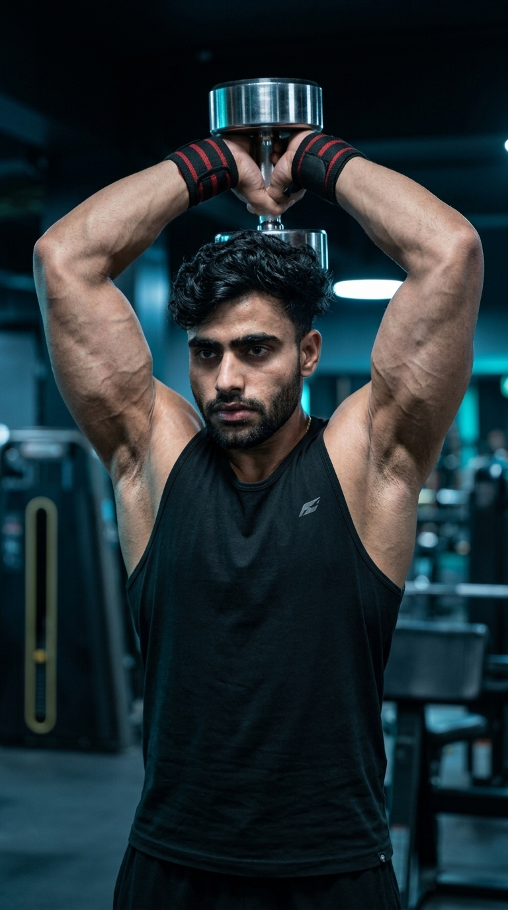

Primary Muscle
Triceps Brachii
Build Bigger, Stronger Triceps with a Deep Stretch & Maximum Long Head Activation
The Dumbbell Overhead Triceps Extension is one of the most effective isolation exercises for building stronger, larger, and more defined triceps. Performing the movement with your arms overhead places the long head of the triceps under a deep stretch, which can promote greater muscle growth. Since only a single dumbbell is required, this exercise is perfect for home workouts and gym training alike. It helps improve elbow extension strength, increase upper-arm size, and create balanced triceps development for lifters of all experience levels.

Triceps Brachii
Dumbbell
Beginner
Isolation
Discover which muscles are primarily responsible for the Dumbbell Overhead Triceps Extension and how the supporting muscles stabilize your shoulders, elbows, and wrists while the overhead position places maximum emphasis on the long head of the triceps for greater arm development.
Long Head (Primary), Lateral & Medial Heads
Elbow Stabilizer
Grip & Wrist Stability
Shoulder Stabilizer
Discover how the Dumbbell Overhead Triceps Extension builds bigger triceps, emphasizes the long head, improves elbow extension strength, and develops stronger, more defined arms using only a single dumbbell.
Holding the dumbbell overhead places the long head of the triceps in a fully stretched position, helping stimulate greater muscle growth and increasing overall upper-arm size.
The overhead movement allows your elbows to travel through a full range of motion, leading to better triceps activation and more effective muscle development.
Regularly performing this exercise increases elbow extension strength, helping improve pressing power in movements such as the bench press, shoulder press, and dips.
Because the triceps make up most of your upper-arm mass, strengthening all three heads contributes to thicker, more muscular arms and improved overall arm definition.
This isolation exercise targets the long head while also recruiting the lateral and medial heads, promoting balanced triceps development and better arm symmetry.
Requiring only a single dumbbell, this exercise is an excellent choice for building triceps strength and muscle whether you're training at home or in a fully equipped gym.
Follow these step-by-step instructions to perform the Dumbbell Overhead Triceps Extension with proper posture, controlled elbow movement, and a full range of motion to maximize long head activation and build stronger, more defined triceps.
Choose a dumbbell that allows you to perform each repetition with proper technique and a full range of motion. Hold one end of the dumbbell securely with both hands.
Start with a lighter weight until you can keep your elbows stable throughout the movement.
Stand tall with your feet shoulder-width apart. Press the dumbbell overhead and position it behind your head with your elbows bent and pointing forward.
Brace your core and avoid arching your lower back while holding the dumbbell overhead.
Extend your elbows until your arms are almost straight above your head. Keep your upper arms stationary and focus on contracting your triceps to lift the weight.
Keep your elbows close to your head instead of letting them flare outward.
Pause briefly at the top of the movement with your elbows fully extended and contract your triceps as hard as possible before lowering the dumbbell.
Hold the contraction for one second to improve your mind-muscle connection.
Slowly bend your elbows to lower the dumbbell behind your head until you feel a comfortable stretch in your triceps. Maintain control throughout the movement before beginning the next repetition.
Lower the dumbbell slowly and avoid using momentum to keep continuous tension on your triceps.
Avoid these common technique mistakes to maximize long head activation, maintain proper form, and perform the Dumbbell Overhead Triceps Extension safely and effectively.
Choosing a dumbbell that is too heavy often causes poor technique, limited range of motion, and excessive body movement, reducing triceps activation.
Select a weight you can control through the entire movement while maintaining strict technique and full elbow extension.
Allowing your elbows to move outward shifts tension away from the triceps and places unnecessary stress on the shoulder joints.
Keep your elbows close to your ears and move only at the elbow joint throughout every repetition.
Leaning backward to lift the dumbbell places unnecessary stress on the lower back and reduces the effectiveness of the exercise.
Brace your core, keep your ribs down, and maintain a neutral spine throughout the movement.
Swinging the dumbbell or rushing the repetitions reduces time under tension and prevents the triceps from working effectively through their full range of motion.
Lift and lower the dumbbell slowly, pause at the top, and control the lowering phase to keep constant tension on the triceps.
Apply these expert coaching cues to improve your Dumbbell Overhead Triceps Extension technique, maximize long head activation, and build stronger, more defined triceps with every repetition.
Your upper arms should remain close to your ears throughout the exercise. Only your forearms should move while extending and bending the elbows.
Stable elbows keep maximum tension on the triceps instead of shifting the workload to your shoulders.
Lower the dumbbell until you feel a comfortable stretch in your triceps, then extend your arms completely without locking your elbows forcefully.
A full stretch followed by a strong contraction helps maximize muscle growth.
Lift the dumbbell smoothly and lower it under control. Avoid swinging the weight or relying on momentum to complete the repetition.
Slow, controlled repetitions create more time under tension and better triceps activation.
Brace your core and maintain a neutral spine throughout the movement to prevent your lower back from arching while supporting the dumbbell overhead.
A stable torso improves balance, protects your lower back, and allows your triceps to perform all the work.
Progress from mastering the Dumbbell Overhead Triceps Extension with a light weight to lifting heavier dumbbells while maintaining proper overhead positioning, strict elbow control, and full triceps extension.
Begin with a light dumbbell to learn the correct overhead position, stable elbow alignment, and proper posture before increasing the load.
Neutral spine, braced core, elbows close to your head, and smooth, controlled repetitions.
Lower the dumbbell behind your head until you feel a comfortable stretch in your triceps, then extend your arms fully without losing control.
Full stretch, complete elbow extension, controlled tempo, and continuous triceps tension.
Once your technique is consistent, gradually increase the dumbbell weight while maintaining proper posture, stable elbows, and complete triceps contraction on every repetition.
Progressive overload, strict form, controlled repetitions, and maximum long head activation.
Challenge your triceps with slow eccentrics, paused repetitions, higher training volume, or heavier dumbbells while maintaining perfect technique from start to finish.
Advanced intensity techniques, strict control, full range of motion, and maximum muscle stimulation on every repetition.
Find answers to common questions about Dumbbell Overhead Triceps Extension technique, muscles worked, proper form, training frequency, and how to maximize long head triceps development.
The Dumbbell Overhead Triceps Extension primarily targets the long head of the triceps while also engaging the lateral and medial heads. Your shoulders, forearms, and core assist by stabilizing the dumbbell throughout the movement.
Raising your arms overhead places the long head of the triceps under a deep stretch, helping increase muscle activation and promoting greater upper-arm development over time.
Most people perform this exercise using one dumbbell held with both hands, which provides better control and stability. Advanced lifters may also perform the movement one arm at a time for unilateral training.
Yes. Beginners should start with a light dumbbell, focus on keeping their elbows stable, and perform slow, controlled repetitions before increasing the weight.
For muscle growth, perform 2–4 working sets of 8–15 repetitions while maintaining a full range of motion, controlled tempo, and proper technique on every repetition.
Yes. Because the triceps make up most of your upper arm, regularly performing Dumbbell Overhead Triceps Extensions with progressive overload, proper nutrition, and adequate recovery can help build stronger, thicker, and more defined arms.
Explore other triceps exercises that complement the Dumbbell Overhead Triceps Extension and help you build stronger, bigger arms through different movement patterns, equipment, and training variations.


Continue building stronger, bigger triceps with step-by-step exercise guides covering proper technique, muscles worked, common mistakes, expert coaching tips, and progression strategies for every fitness level.